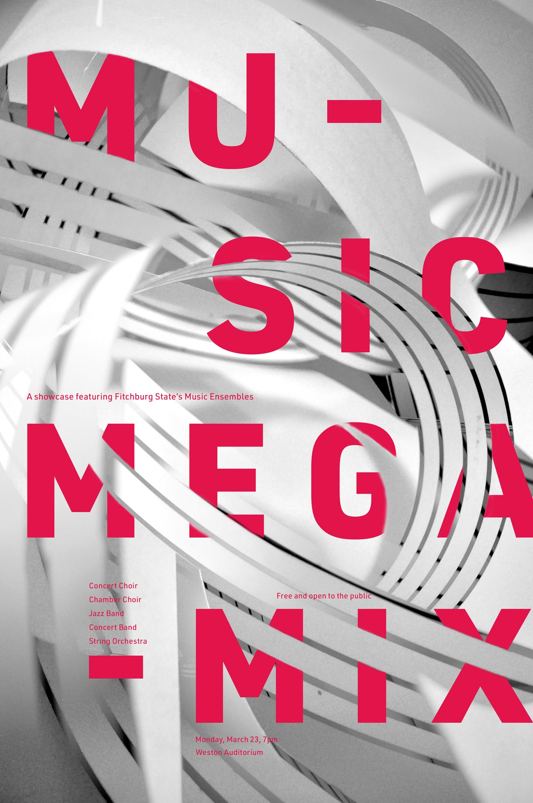
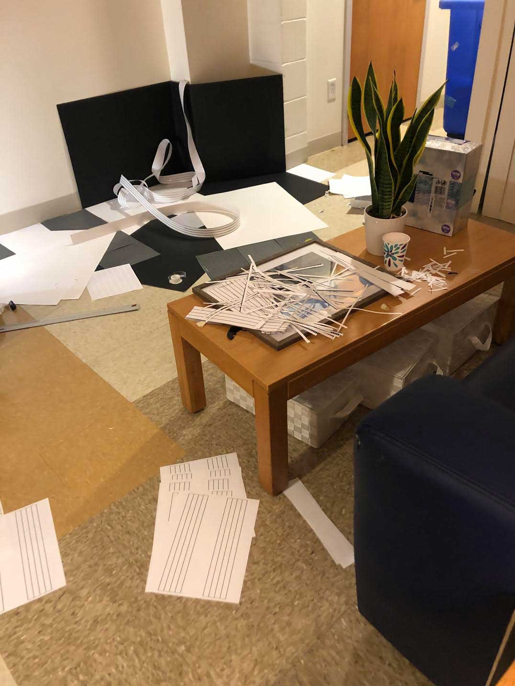

Cynthia Schilling
Music Mega Mix poster
I designed this poster for a mixed-ensemble concert (jazz band, concert band, orchestra, choirs) at Fitchburg State. The ensemble director asked me to make something bold and unique. In the poster, I wanted to express various qualities of the music: the bright pink, bold, large, crisp geometric shapes of the type express the jazz and concert band’s sharp, bold, bright, resonant sounds. The soft, curved lines and subtle shades of white and grey resemble the softer, warmer tones of the choir voices and orchestral string instruments. Additionally, the lines reference the staff lines on sheet music.

To create it, I cut strips of paper, created paper sculptures, set up lighting, took hundreds of photographs, and edited digitally.